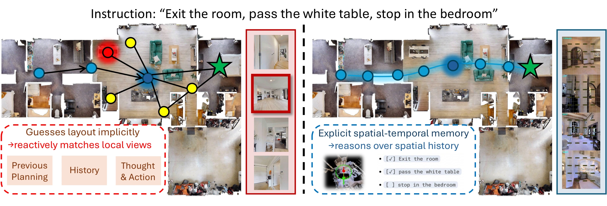
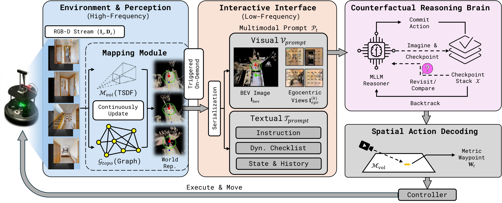
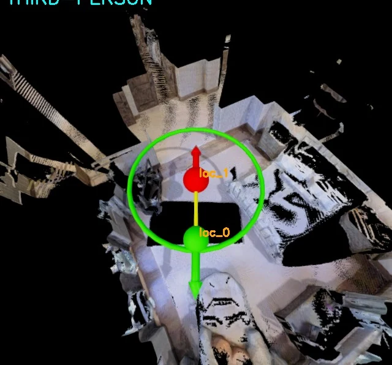
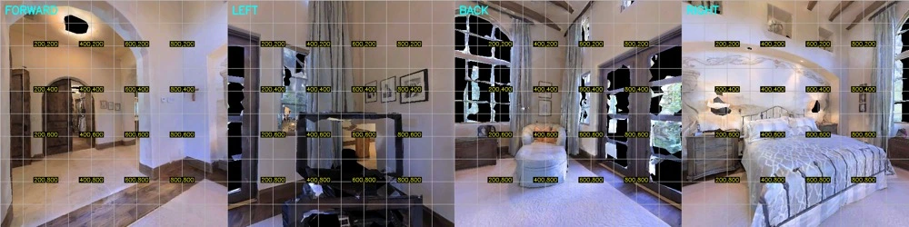
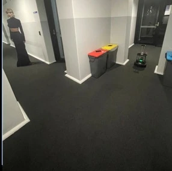
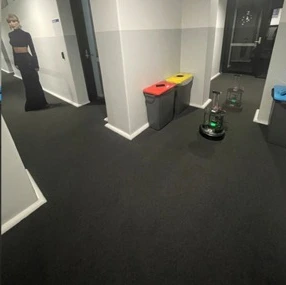
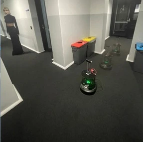
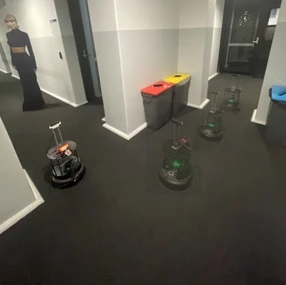

Build the world map
RGB-D observations accumulate into a 3D surface map. A graph records visited locations and the paths between them.
Conference on Robot Learning (CoRL) 2026
† Joint first authors · * Corresponding author

A navigation agent must understand high-level semantic instructions and reason about precise spatial structure. Multimodal Large Language Models (MLLMs), with their strong generalization, are a promising foundation for such agents. We propose GTA, a decoupled design that separates low-level spatial state estimation from high-level semantic planning. We introduce an explicit metric world representation that combines accumulated geometry with navigation history and exposes this information to the MLLM through a multimodal interface for decision-making. We further introduce counterfactual branch reasoning that checks anticipated outcomes against subsequent observations and revises navigation decisions when they disagree. The world representation grounds waypoint selection in reconstructed metric geometry. GTA achieves 48.8% Success Rate (SR) on the full R2R-CE val-unseen split and 46.2% on a 260-episode English RxR-CE val-unseen subset. Additional comparisons on shared R2R-CE episodes and mechanism ablations support the framework's effectiveness. We also demonstrate transfer to wheeled, quadrupedal, and aerial robots.
GTA builds a metric map as it moves. A frozen MLLM reads the map and the instruction together, selects a waypoint, and checks its expectations against what the robot sees next.

RGB-D observations accumulate into a 3D surface map. A graph records visited locations and the paths between them.
The MLLM selects a pixel in an egocentric view. A ray cast into the reconstructed surface converts that pixel into a metric target.
At a junction, the agent records what it expects to see. If later observations contradict that expectation, it returns to the checkpoint to try another branch.
Follow an eight-step R2R-CE episode through the agent’s metric map and the four views it receives at each step.

“Walk through the room, past everything and towards the further window, stopping once you’re near the steps and making a right turn, stop once you’re near the chairs.”

The same framework runs on a wheeled robot, a quadruped, and a drone. Each platform was evaluated in 50 real-world trials.




“Go straight and walk through the bins on your both sides, turn left and stop in front of the Cardboard Mannequin.”
GTA achieves 48.8% success on the full 1,839-episode R2R-CE val-unseen split and 46.2% on a 260-episode English RxR-CE val-unseen subset.
| Evaluation set | Episodes | SR ↑ | SPL ↑ | nDTW ↑ |
|---|---|---|---|---|
| R2R-CE · full | 1,839 | 48.8 | 41.8 | 60.4 |
| RxR-CE · English subset | 260 | 46.2 | 39.3 | 57.4 |
SR is success rate. SPL weights success by path length. nDTW measures how closely the trajectory follows the reference path.
View world representation ablations@inproceedings{li2026gta,
title = {One Agent to Guide Them All: Empowering {MLLMs} for Vision-and-Language Navigation via Explicit World Representation},
author = {Li, Zerui and Zheng, Hongpei and Zhao, Fangguo and Shao, Yanyan and Zhou, Jian and Lin, Sihao and Li, Shijie and Wu, Qi},
booktitle = {Conference on Robot Learning},
year = {2026}
}